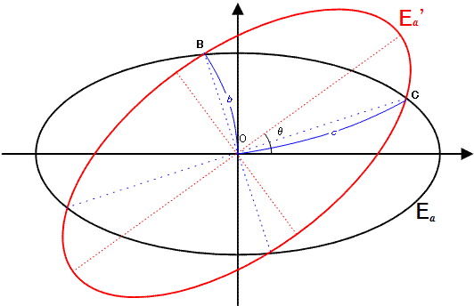

$E_a$ is an ellipse with an equation of the form $x^2 + 4y^2 = 4a^2$.
$E_a^\prime$ is the rotated image of $E_a$ by $\theta$ degrees counterclockwise around the origin $O(0, 0)$ for $0^\circ \lt \theta \lt 90^\circ$.

$b$ is the distance to the origin of the two intersection points closest to the origin and $c$ is the distance of the two other intersection points.
We call an ordered triplet $(a, b, c)$ a canonical ellipsoidal triplet if $a, b$ and $c$ are positive integers.
For example, $(209, 247, 286)$ is a canonical ellipsoidal triplet.
Let $C(N)$ be the number of distinct canonical ellipsoidal triplets $(a, b, c)$ for $a \leq N$.
It can be verified that $C(10^3) = 7$, $C(10^4) = 106$ and $C(10^6) = 11845$.
Find $C(10^{17})$.
solve(max_limit=1000) → ?solve(max_limit=100000000000000000) → ?